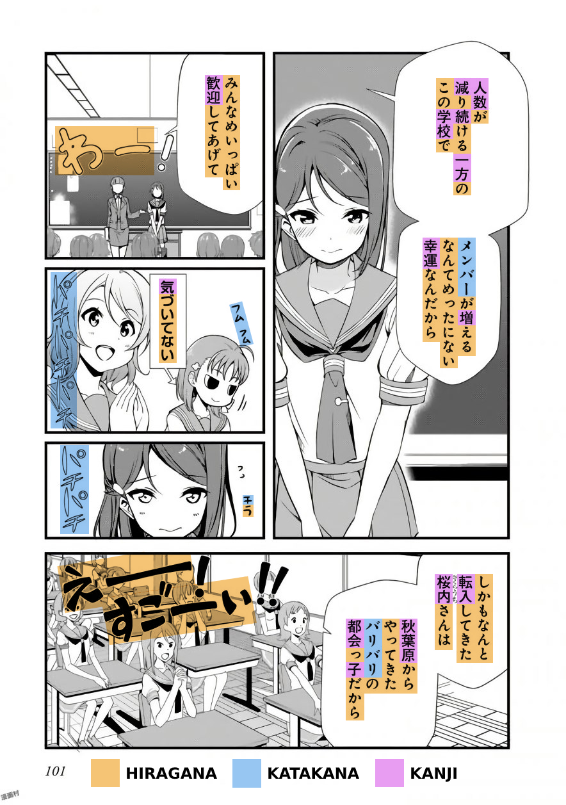

Kanji
Kanji, literally meaning "Chinese Characters" is the third part of the Japanese writing system. They are logographic and, therefore, much more complicated than kana. There are 2136 kanji taught in the Japanese school system; however, don't let this fool you. People use three thousand or more Kanji in daily life. People use Kanji all the time. You will eventually understand what this means when you get a little more advanced in Japanese.
Above is a page from the Love Live! Sunshine!! Manga, showing hiragana, Katakana, and Kanji.
Approaching Kanji - Kanji With Vocab vs. Isolated Kanji Study
There are two ways to approach Kanji. One is Kanji with vocab, which is to learn words from reading without studying the individual Kanji. You can fully comprehend "守銭奴" without knowing what the individual Kanji means by looking it up in a dictionary. The other is an isolated kanji study, studying the meaning and composition of the individual Kanji. Example: "守" "guard" "銭" "coin" "奴" "guy" = cheapskate. Huh? It's pretty smart. Isolated kanji study can make remembering vocab easier, but it can put you behind due to the amount of time it takes, so it is up to you to decide whether it is worth it. If you struggle with reading words, then you should do an isolated kanji study. ※ Another interesting thing about Kanji with vocab is that if you know other words that also use the Kanji of said word, it can become easier to remember. (Example: If you can comprehend "守護," "銭湯," and "売国奴," then "守銭奴" becomes easier.)
How to: Kanji with Vocab
This method is the most straightforward approach to Kanji, and it is the approach I took personally. Look at the image above. Most people will read the kana just by referring to the kana chart, but you can't do the same for Kanji. So how do you learn to read Kanji? Look at the first panel. You see "人数"? That's a word. Look it up in a dictionary such as jisho You get the reading: "にんずう" and the meaning: "number of people." Cool, move on. That's it. But don't expect to remember words just by looking it up once. That is why you should read a lot to build up and retain kanji skills. At the end of the guide, I will go through how to make looking up words smoother.
How to: Kanji with Isolation Study

Image Credit: Daily Japanese Thread/Itazuraneko
When approaching Kanji as a beginner, they can look like scribbles rather than familiar shapes, like how a native sees Kanji. Kanji have common shapes and patterns, and Isolated Kanji Study helps you see those common shapes and designs. Instead of "草," looking like a random drawing, you can see that it's composed of "艹," "日," and "十." You can use RRTK (Recognition Remembering the Kanji), a shortened version of the original RTK (Remembering the Kanji). You can find more details about this over at Mass Immersion Approach.
RRTK breaks up the Kanji into "elements," as demonstrated with the kanji "草" earlier. Seeing Kanji as familiar shapes is a primary benefit of RRTK, and memorizing the meanings is a secondary benefit. Knowing the purposes can be pretty handy; however, over time, these meanings fade away and only act as a crutch. To truly "learn" Kanji, you still need to read Japanese for thousands of hours, so in the end, you're going to be doing Kanji with vocab anyway. Think of isolated kanji study as your training wheels for Kanji with vocab.